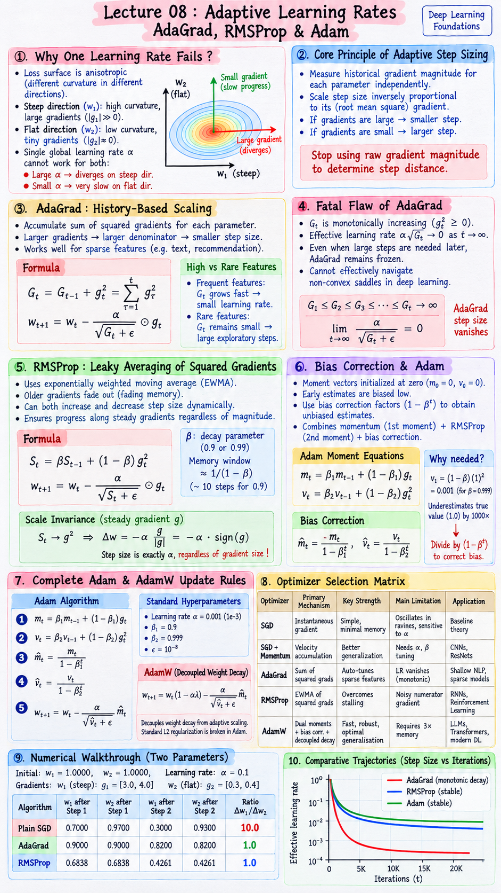

Executive Summary & Formula Sheet
Core Concept: Standard SGD and Momentum apply a single scalar learning rate \(\alpha\) across all model parameters. In deep neural networks, loss curvature is highly anisotropic: steep coordinates require small step sizes to prevent destructive divergence, while flat coordinates require large step sizes to make measurable progress. Adaptive learning rate optimizers solve this dilemma by measuring each parameter's historical gradient magnitudes and scaling each coordinate step inversely proportional to its root mean square gradient.
- AdaGrad Accumulator: $$G_t = G_{t-1} + g_t^2, \quad w_{t+1} = w_t - \frac{\alpha}{\sqrt{G_t + \epsilon}} g_t$$
- RMSProp Fading Memory (EWMA): $$S_t = \beta S_{t-1} + (1 - \beta) g_t^2, \quad w_{t+1} = w_t - \frac{\alpha}{\sqrt{S_t + \epsilon}} g_t$$
- Adam 1st & 2nd Moments: $$m_t = \beta_1 m_{t-1} + (1 - \beta_1) g_t, \quad v_t = \beta_2 v_{t-1} + (1 - \beta_2) g_t^2$$
- Adam Bias Corrections: $$\hat{m}_t = \frac{m_t}{1 - \beta_1^t}, \quad \hat{v}_t = \frac{v_t}{1 - \beta_2^t}$$
- Adam Parameter Update: $$w_{t+1} = w_t - \frac{\alpha}{\sqrt{\hat{v}_t} + \epsilon} \hat{m}_t$$
- AdamW Decoupled Weight Decay: $$w_{t+1} = w_t (1 - \alpha \lambda) - \frac{\alpha}{\sqrt{\hat{v}_t} + \epsilon} \hat{m}_t$$
Lecture 08 Visual Cheatsheet

Click image to open high-resolution version in new tab
1. Why One Learning Rate Fails: Curvature & Scale
1.1 Anisotropic Valleys & Heterogeneous Curvature
In real-world deep neural networks, loss surfaces are rarely symmetric bowls. Instead, they form narrow, elongated canyons known as anisotropic valleys. Mathematically, this is captured by the Hessian matrix of second derivatives, where eigenvalues differ by orders of magnitude:
- Steep Direction (\(w_1\)): High curvature, large second derivative \(\frac{\partial^2 L}{\partial w_1^2}\), yielding large gradient values \(|g_1| \gg 0\).
- Flat Direction (\(w_2\)): Low curvature, tiny second derivative \(\frac{\partial^2 L}{\partial w_2^2}\), yielding minute gradient values \(|g_2| \approx 0\).
Under a single global learning rate \(\alpha\), we face an impossible dilemma: if \(\alpha\) is chosen large enough to make progress along the flat coordinate \(w_2\), the update across the steep coordinate \(w_1\) blows up and diverges. Conversely, if \(\alpha\) is tuned small enough to prevent oscillation along \(w_1\), motion along \(w_2\) grinds to a dead halt.
1.2 Limitations of Momentum on Step Distance
SGD with Momentum accumulates past gradients to smooth oscillations and provide directional inertia. However, momentum primarily modifies the direction of updates, not their absolute coordinate-wise step distance.
In empirical experiments on anisotropic quadratic losses (e.g. \(L(w_1, w_2) = 10w_1^2 + w_2^2\)), when \(\alpha = 0.08\), the steep direction finishes in 3 steps while the flat direction takes 574 steps. Adding heavy momentum (\(\beta = 0.9\)) reduces the flat direction to 539 steps: a modest 6% improvement. Momentum alone cannot resolve the coordinate scale disparity.
1.3 The Core Principle of Adaptive Step Sizing
Stop using raw gradient magnitude to determine step distance.
Instead, measure the historical scale of gradients for every coordinate independently. If a parameter has consistently large gradients, divide its step size by a running measure of its gradient scale. If a parameter has consistently tiny gradients, divide by that small number to scale its step size up.
2. AdaGrad: History-Based Coordinate Scaling
2.1 Sum of Squared Gradients Accumulator
Proposed by Duchi, Hazan, and Singer (2011), AdaGrad (Adaptive Gradient Algorithm) introduces an accumulator vector \(G_t\) of the exact same dimensionality as parameter vector \(w\). At every iteration \(t\), the element-wise square of the current gradient is added to the historical sum:
Where \(G_0 = \mathbf{0}\). Squaring ensures that signs never cancel: every gradient step contributes positively to the coordinate's accumulated variation.
2.2 Parameter Update Equation & Coordinate Damping
AdaGrad divides the base learning rate \(\alpha\) element-wise by the square root of the accumulated squared gradients:
Here \(\epsilon\) is a tiny smoothing term (typically \(10^{-8}\)) that prevents division by zero on step 1 or for inactive parameters.
Notice the self-regulating behavior: if coordinate \(i\) has a massive gradient \(g_{t,i} = 3.0\), then \(G_{t,i}\) becomes large, and the effective step \(\frac{\alpha}{\sqrt{G_{t,i}}} g_{t,i} \approx \alpha \frac{3}{\sqrt{9}} = \alpha \cdot 1.0\). The step size is completely tamed!
2.3 High-Frequency vs Rare Feature Handling
AdaGrad provides exceptional advantages in settings with sparse features (e.g. text classification, word embeddings, recommendation systems):
- Frequent Features (e.g., common words): Experience frequent gradient updates, causing \(G_t\) to grow rapidly and shrinking their effective learning rate to prevent divergence.
- Infrequent Features (e.g., rare domain words): Receive few updates, so their \(G_t\) remains very small, allowing large exploratory steps whenever they do appear in a mini-batch.
3. The Fatal Flaw of AdaGrad: Premature Stalling
3.1 Monotonically Growing Denominator
Because \(g_t^2 \ge 0\) at every single iteration, the accumulator sum \(G_t = G_{t-1} + g_t^2\) is strictly monotonically non-decreasing:
Every non-zero gradient, regardless of whether it occurred 10,000 steps ago during initial chaotic exploration or right now, permanently increases the denominator.
3.2 Effective Step Decay to Zero
As training proceeds, \(\sqrt{G_t}\) grows relentlessly large. Consequently, the effective coordinate learning rate shrinks to negligible fractions:
Even if the model reaches a plateau or enters a totally new loss basin where large steps are desperately required, AdaGrad's effective step size remains frozen at zero. The optimizer loses all plasticity and stalls prematurely long before finding an optimal minimizer.
3.3 Inability to Navigate Non-Convex Saddles
In deep learning, landscapes are filled with saddle points and flat plateaus. When an optimizer exhausts its learning rate early during the steep initial descent, it becomes completely trapped when navigating subtle saddle points later in training. This makes AdaGrad unsuitable for deep neural network architectures.
4. RMSProp: Leaky Averaging of Squared Gradients
4.1 Fading Memory via Exponential Moving Average
Introduced by Geoffrey Hinton in his Coursera Lecture 6 (2012), RMSProp (Root Mean Square Propagation) resolves AdaGrad's stalling flaw by replacing the infinite summation with an Exponentially Weighted Moving Average (EWMA) of squared gradients:
Where \(\beta \in (0, 1)\) is the decay parameter (typically \(\beta = 0.9\) or \(0.99\)). Instead of remembering the entire training history, RMSProp maintains an effective memory window of approximately \(\frac{1}{1 - \beta}\) steps (e.g. 10 steps when \(\beta = 0.9\)). Older gradients fade out exponentially!
4.2 RMSProp Parameter Update Equation
With a fading memory scale \(S_t\), the parameter update is defined as:
Because \(S_t\) can both decrease (when recent gradients are small) and increase (when recent gradients are large), the effective step size \(\frac{\alpha}{\sqrt{S_t + \epsilon}}\) dynamically adapts up or down throughout training, completely eliminating premature freezing.
4.3 Scale Invariance Under Steady Gradients
Consider what occurs when a parameter receives a steady gradient \(g\) over several steps. The EWMA converges to the squared gradient: \(S_t \to g^2\). Substituting this into the update rule:
For any steady gradient, RMSProp takes a step of size exactly \(\alpha\) in the direction of the sign of the gradient, regardless of whether the gradient was \(100.0\) or \(0.001\)! Steep and flat directions make equal progress along steady slopes.
5. The Need for Bias Correction & Adam
5.1 Zero-Initialization Cold Start Problem
In practice, moment vectors are initialized at zero: \(m_0 = \mathbf{0}\) and \(v_0 = \mathbf{0}\). Consider the first step of an EWMA with decay \(\beta = 0.999\) on a constant gradient \(g = 1\):
Notice that \(v_1\) is \(0.001\), whereas the true gradient squared is \(1.0\)! It is artificially underestimated by a factor of 1000 simply because it started from zero. In the denominator of an update rule, \(\frac{1}{\sqrt{v_1}} = \frac{1}{\sqrt{0.001}} \approx 31.62\), which would produce an explosive, erratic jump on early mini-batches.
5.2 Derivation of the Bias Correction Factor
Let's unroll the recursive formula for \(v_t\) assuming gradients \(g_i\) come from a stationary distribution with expectation \(E[g_i^2]\):
$$v_t = (1 - \beta) \sum_{i=1}^t \beta^{t-i} g_i^2$$
Taking expectations on both sides:
$$E[v_t] = E\left[(1 - \beta) \sum_{i=1}^t \beta^{t-i} g_i^2\right] = E[g_t^2] \cdot (1 - \beta) \sum_{i=1}^t \beta^{t-i}$$
The finite geometric series sums to \(\sum_{i=1}^t \beta^{t-i} = \frac{1 - \beta^t}{1 - \beta}\). Substituting this back:
$$E[v_t] = E[g_t^2] \cdot (1 - \beta) \left(\frac{1 - \beta^t}{1 - \beta}\right) = E[g_t^2] \cdot (1 - \beta^t)$$
To eliminate this discrepancy so that \(E[\hat{v}_t] = E[g_t^2]\), we must divide by \((1 - \beta^t)\):
When \(t=1\), \(\frac{1}{1 - 0.999^1} = \frac{1}{0.001} = 1000\), perfectly correcting \(0.001 \times 1000 = 1.0\)! As \(t \to \infty\), \(\beta^t \to 0\), so the correction factor smoothly approaches \(1.0\).
5.3 Combining Velocity (1st Moment) and Scale (2nd Moment)
Kingma and Ba (2014) combined the best of both worlds in Adam (Adaptive Moment Estimation):
- First Moment (\(m_t\)): Tracks directional velocity (Momentum) to dampen oscillations and barrel through small noise.
- Second Moment (\(v_t\)): Tracks coordinate-wise gradient variance (RMSProp) to normalize step size across heterogeneous curvatures.
- Analytical Bias Correction: Protects against wild initialization transients during the first few hundred steps.
6. Adam & AdamW Update Rules and Trade-offs
6.1 Complete Adam Algorithm & Standard Hyperparameters
At each iteration \(t\) with mini-batch gradient \(g_t\):
- Update biased 1st moment: \(m_t = \beta_1 m_{t-1} + (1 - \beta_1) g_t\)
- Update biased 2nd raw moment: \(v_t = \beta_2 v_{t-1} + (1 - \beta_2) g_t^2\)
- Compute bias-corrected 1st moment: \(\hat{m}_t = \frac{m_t}{1 - \beta_1^t}\)
- Compute bias-corrected 2nd moment: \(\hat{v}_t = \frac{v_t}{1 - \beta_2^t}\)
- Update weights: \(w_{t+1} = w_t - \frac{\alpha}{\sqrt{\hat{v}_t} + \epsilon} \hat{m}_t\)
Learning rate: \(\alpha = 0.001\) (1e-3); First moment decay: \(\beta_1 = 0.9\); Second moment decay: \(\beta_2 = 0.999\); Epsilon: \(\epsilon = 10^{-8}\). These defaults perform remarkably well across almost all neural architectures with zero manual tuning.
6.2 Decoupled Weight Decay in AdamW
Loshchilov and Hutter (2017) discovered that standard L2 regularisation is broken when implemented in Adam. In traditional SGD, adding \(\frac{1}{2}\lambda w^2\) to the loss adds \(\lambda w\) to the gradient, which corresponds directly to weight decay.
In Adam, however, \(\lambda w\) enters into the second moment accumulator \(v_t\). If a weight is large, its \(\lambda w\) term inflates \(v_t\), which increases the denominator and paradoxically reduces the penalty force! AdamW decouples weight decay by subtracting \(\alpha \lambda w_t\) directly outside the adaptive scaling:
AdamW is now the universal gold standard for training Transformers, Large Language Models (LLMs), and modern deep networks.
6.3 Optimizer Selection Matrix
| Optimizer | Primary Mechanism | Key Strength | Main Limitation | Recommended Application |
|---|---|---|---|---|
| SGD | Pure instantaneous gradient | Simple, minimal memory | Oscillates in ravines, sensitive to \(\alpha\) | Baseline theory |
| SGD + Momentum | Velocity accumulation | Superior generalization in vision | Requires extensive \(\alpha, \beta\) schedule tuning | ResNets, ConvNets |
| AdaGrad | Sum of squared gradients | Auto-tunes sparse features | Learning rate monotonically vanishes | Shallow NLP, sparse tabular models |
| RMSProp | EWMA of squared gradients | Overcomes AdaGrad stalling | Still uses noisy raw numerator gradient | RNNs, Reinforcement Learning |
| AdamW | Dual moments + bias corr. + decoupled decay | Fast, robust, optimal generalisation | Requires 3x memory for optimizer states | Default for LLMs, Transformers, modern DL |
7. Step-by-Step Worked Numerical Walkthrough
7.1 Coordinate Gradient Setup
Consider two parameters of a neural network starting at \(w_1 = 1.0000\) and \(w_2 = 1.0000\). The loss landscape is an anisotropic valley where \(w_1\) is on a steep slope and \(w_2\) is on a flat slope. Their observed gradients over two consecutive steps are:
| Parameter | Step 1 Gradient (\(g_1\)) | Step 2 Gradient (\(g_2\)) | Curvature Profile |
|---|---|---|---|
| \(w_1\) | \(3.0\) | \(4.0\) | Steep direction (large gradient) |
| \(w_2\) | \(0.3\) | \(0.4\) | Flat direction (ten times smaller gradient) |
7.2 Step 1 & Step 2 Arithmetic Walk
Step 1:
- \(w_1 = 1.0000 - 0.1(3.0) = \mathbf{0.7000}\)
- \(w_2 = 1.0000 - 0.1(0.3) = \mathbf{0.9700}\)
Step 2:
- \(w_1 = 0.7000 - 0.1(4.0) = \mathbf{0.3000}\) (Total moved: \(0.7000\))
- \(w_2 = 0.9700 - 0.1(0.4) = \mathbf{0.9300}\) (Total moved: \(0.0700\))
Notice: \(w_1\) moved 10 times farther than \(w_2\)! Progress along the flat direction is virtually stalled.
Step 1 (\(g_1 = 3.0, g_2 = 0.3\)):
- \(G_1(w_1) = 0 + 3^2 = 9.0000 \implies \sqrt{G_1} = 3.0000 \implies \Delta w_1 = -\frac{0.1 \times 3.0}{3.0000} = \mathbf{-0.1000} \implies w_1 = \mathbf{0.9000}\)
- \(G_1(w_2) = 0 + 0.3^2 = 0.0900 \implies \sqrt{G_1} = 0.3000 \implies \Delta w_2 = -\frac{0.1 \times 0.3}{0.3000} = \mathbf{-0.1000} \implies w_2 = \mathbf{0.9000}\)
Step 2 (\(g_1 = 4.0, g_2 = 0.4\)):
- \(G_2(w_1) = 9.0 + 4^2 = 25.0000 \implies \sqrt{G_2} = 5.0000 \implies \Delta w_1 = -\frac{0.1 \times 4.0}{5.0000} = \mathbf{-0.0800} \implies w_1 = \mathbf{0.8200}\)
- \(G_2(w_2) = 0.09 + 0.4^2 = 0.2500 \implies \sqrt{G_2} = 0.5000 \implies \Delta w_2 = -\frac{0.1 \times 0.4}{0.5000} = \mathbf{-0.0800} \implies w_2 = \mathbf{0.8200}\)
Notice: In both steps, \(w_1\) and \(w_2\) moved exactly equal distances (\(-0.1000\) and \(-0.0800\)), perfectly overcoming the 10x gradient disparity! However, notice how step size shrank from \(0.1000\) to \(0.0800\) as \(G\) accumulated.
Step 1:
- \(S_1(w_1) = 0.9(0) + 0.1(3^2) = 0.9000 \implies \sqrt{S_1} = 0.9487 \implies \Delta w_1 = -\frac{0.1(3.0)}{0.9487} = \mathbf{-0.3162} \implies w_1 = \mathbf{0.6838}\)
- \(S_1(w_2) = 0.9(0) + 0.1(0.3^2) = 0.0090 \implies \sqrt{S_1} = 0.0949 \implies \Delta w_2 = -\frac{0.1(0.3)}{0.0949} = \mathbf{-0.3162} \implies w_2 = \mathbf{0.6838}\)
Step 2:
- \(S_2(w_1) = 0.9(0.9000) + 0.1(4^2) = 0.8100 + 1.6000 = 2.4100 \implies \sqrt{S_2} = 1.5524 \implies \Delta w_1 = -\frac{0.1(4.0)}{1.5524} = \mathbf{-0.2577} \implies w_1 = \mathbf{0.4261}\)
- \(S_2(w_2) = 0.9(0.0090) + 0.1(0.4^2) = 0.0081 + 0.0160 = 0.0241 \implies \sqrt{S_2} = 0.1552 \implies \Delta w_2 = -\frac{0.1(0.4)}{0.1552} = \mathbf{-0.2577} \implies w_2 = \mathbf{0.4261}\)
RMSProp preserves dynamic responsiveness while guaranteeing identical progress along both coordinates.
7.3 Comprehensive Comparative Trajectory Table
| Algorithm | \(w_1\) after Step 1 | \(w_2\) after Step 1 | \(w_1\) after Step 2 | \(w_2\) after Step 2 | Ratio \(\frac{\Delta w_1}{\Delta w_2}\) |
|---|---|---|---|---|---|
| Plain SGD | 0.7000 | 0.9700 | 0.3000 | 0.9300 | 10.0 (Severe imbalance) |
| AdaGrad | 0.9000 | 0.9000 | 0.8200 | 0.8200 | 1.0 (Balanced, but decaying) |
| RMSProp | 0.6838 | 0.6838 | 0.4261 | 0.4261 | 1.0 (Balanced & persistent) |
Original PDF Notes
Below is the original PDF document for Lecture 08 (Adaptive Learning Rates Worksheet):